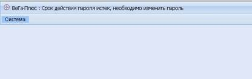
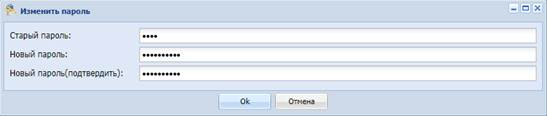
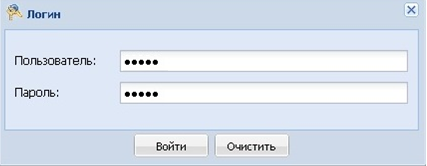
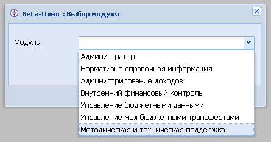
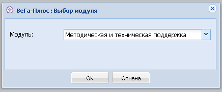
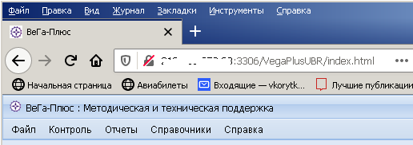

В браузере перейти по адресу*:
http://10.10.1.73/VegaPlusUBR (регистр важен).
* Перед началом работы от лица Рострудинспекции необходимо подключиться с сети с помощью VPN-подключения.
Пароль пользователя, использованный для первичного входа в Систему, является временным и подлежит замене пользователем.
Для смены пароля необходимо перейти в раздел «Система» - «Изменить пароль» и в открывшемся окне ввести старый и новый пароли (Рисунок 1).


Рисунок 1 – Смена пароля пользователя
В случае утери пароля или необходимости сменить его по другим причинам, требуется написать заявку по адресу support@rostud.ru.
После смены пароля:
В Системе настроено персонифицированное разделение прав доступа пользователей к информации, содержащейся в БД.
В окне «Логин» ввести регистрационные данные пользователя, нажать «Войти» (Рисунок 2).

Рисунок 2 – Экранная форма окна ввода регистрационных данных пользователя
В строке «Модуль» выбрать из выпадающего списка модуль «Методическая и техническая поддержка », нажать «ОК» (Рисунок 3).


Рисунок 3 – Экранная форма окна «Выбор модуля»
Главное окно системы содержит строку меню со следующими разделами (Рисунок 4):
• «Файл»;
• «Контроль»;
• «Отчеты»;
• «Справочники».

Рисунок 4 – Главное окно системы